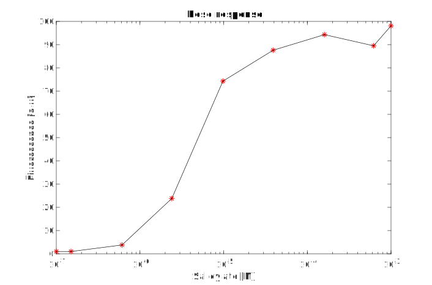
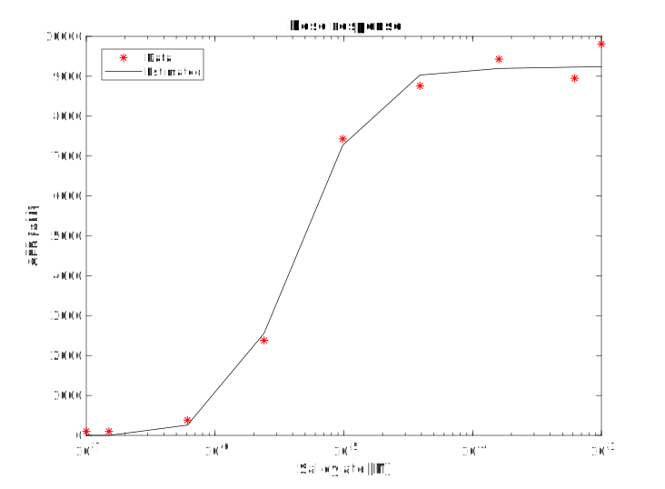

{{Lund}}
<html>
</div> <!-- iGEM stuff-->

<script type="text/javascript">
  $('#navbar').addClass('navbar-transparent');
</script>

<header class="modeling-landing">
  <div class="container">
    <h1 class="display">Modeling</h1>
  </div>
</header>

<section id="modeling">
  <div class="container">
    <div id="modelnav">
      <nav class="navbar navbar-default navbar-static-top nav nav-pills" style="background-color:white">
        <li><a href="/Team:Lund/Model.html">Results</a></li>
        <li><a href="/Team:Lund/Modeling/ModelDerivation.html">Model derivation</a></li>
        <li class="active"><a href="/Team:Lund/Modeling/ParameterEstimation.html">Parameter estimation</a></li>
        <li><a href="/Team:Lund/Modeling/Implementation.html">Implementation</a></li>
      </nav>
    </div>
  <h3>Overview</h3>
  <p>In this section we provide the parameters used in the model. Table 1 yields an overview for all parameters with a
  corresponding reference to the literature and comment in the description section.</p>
  <br>

  <h3>Parameters</h3>
  <table class="table">
    <caption>Table 1: List of parameters.</caption>
    <thead>
      <tr>
        <th>Parameter</th>
        <th>Value</th>
        <th>Unit</th>
        <th>Description</th>
        <th>Reference</th>
      </tr>
    </thead>
    <tbody>
      <tr>
        <td>$\ce{C_\text{p}}$</td>
        <td>$40$</td>
        <td>-</td>
        <td>Copy number</td>
        <td>[1]</td>
      </tr>
      <tr>
        <td>$\ce{V}$</td>
        <td>$8 \cdot 10^{-16}$</td>
        <td>L</td>
        <td>E. coli cell volume</td>
        <td>[2]</td>
      </tr>
      <tr>
        <td>$\ce{k_\text{MR}}$</td>
        <td>$0.11$</td>
        <td>$\text{min}^{-1}$</td>
        <td>MR transcription rate constant</td>
        <td>[2]<sup>a)</sup></td>
      <tr>
      <tr>
        <td>$\ce{k_\text{R}}$</td>
        <td>$15$</td>
        <td>$\ce{min}^{-1}$</td>
        <td>R translation rate constant</td>
        <td>[2]</td>
      </tr>
      <tr>
        <td>$\ce{k_\text{2R}}$</td>
        <td>$50$</td>
        <td>$\ce{\text{nM}^{-1} min^{-1}}$</td>
        <td>R dimerization rate constant</td>
        <td>[2]</td>
      </tr>
      <tr>
        <td>$\ce{k_\text{-2R}}$</td>
        <td>$10^{-3}$</td>
        <td>$\ce{min}^{-1}$</td>
        <td>R$_2$ dissociation rate constant</td>
        <td>[2]</td>
      </tr>
      <tr>
        <td>$\ce{k_\text{r}}$</td>
        <td>$960$</td>
        <td>$\text{nM}^{-1} \text{min}^{-1}$</td>
        <td>Operator repression rate constant</td>
        <td>[2]</td>
      </tr>
      <tr>
        <td>$\ce{k_\text{-r}}$</td>
        <td>$2.4$</td>
        <td>$\text{min}^{-1}$</td>
        <td>Operator derepression rate constant</td>
        <td>[2]</td>
      </tr>
      <tr>
        <td>$\ce{k_\text{dr1}}$</td>
        <td>$3\cdot 10^{-7}$</td>
        <td>$\text{nM}^{-2}\text{min}^{-1}$</td>
        <td>Free R$_2$ repression rate constant</td>
        <td>[2]</td>
      </tr>
      <tr>
        <td>$\ce{k_\text{-dr1}}$</td>
        <td>$12$</td>
        <td>$\text{min}^{-1}$</td>
        <td>Free R$_2$ derepression rate constant</td>
        <td>[2]</td>
      </tr>
      <tr>
        <td>$\ce{k_\text{dr2}}$</td>
        <td>$3\cdot 10^{-7}$</td>
        <td>$\text{nM}^{-2} \text{min}^{-1}$</td>
        <td>Operator bound R$_2$ repression rate constant</td>
        <td>[2]</td>
      </tr>
      <tr>
        <td>$\ce{k_\text{-dr2}}$</td>
        <td>$4.8 \cdot 10^{3}$</td>
        <td>$\text{nM}^{-1} \text{min}^{-1}$</td>
        <td>Operator bound R$_2$ derepression rate constant</td>
        <td>[2]</td>
      </tr>
      <tr>
        <td>$\ce{k_\text{MN}}$</td>
        <td>$3.09$</td>
        <td>$\text{min}^{-1}$</td>
        <td>NahR mRNA transcription rate constant</td>
        <td>[3]<sup>b)</sup></td>
      </tr>
      <tr>
        <td>$\ce{k_\text{ME}}$</td>
        <td>$3.18$</td>
        <td>$\text{min}^{-1}$</td>
        <td>Estrogen receptor LBD mRNA transcription rate constant</td>
        <td>[3]<sup>b)</sup></td>
      </tr>
      <tr>
        <td>$\ce{k_\text{MG}}$</td>
        <td>$4.72$</td>
        <td>$\text{min}^{-1}$</td>
        <td>GFP1-9 mRNA transcription rate constant</td>
        <td>[3]<sup>b)</sup></td>
      </tr>
      <tr>
        <td>$\ce{k_\text{N}}$</td>
        <td>$3.0$</td>
        <td>$\text{min}^{-1}$</td>
        <td>NahR translation rate constant</td>
        <td>[3]<sup>c)</sup></td>
      </tr>
      <tr>
        <td>$\ce{k_\text{E}}$</td>
        <td>$2.86$</td>
        <td>$\text{min}^{-1}$</td>
        <td>Estrogen receptor LBD translation rate constant</td>
        <td>[3]<sup>c)</sup></td>
      </tr>
      <tr>
        <td>$\ce{k_\text{G}}$</td>
        <td>$4.59$</td>
        <td>$\text{min}^{-1}$</td>
        <td>GFP1-9 translation rate constant</td>
        <td>[3]<sup>c)</sup></td>
      </tr>
      <tr>
        <td>$\ce{k_\text{mG}}$</td>
        <td>$0.167$</td>
        <td>$\text{min}^{-1}$</td>
        <td>GFP1-9 maturation rate constant</td>
        <td>[3]<sup>d)</sup></td>
      </tr>
      <tr>
        <td>$\ce{k_\text{aEEs}}$</td>
        <td>$0.078$</td>
        <td>$\text{nM}^{-1}\text{min}^{-1}$</td>
        <td>Estrogen receptor-ligand association rate constant</td>
        <td>[4]<sup>e)</sup></td>
      </tr>
      <tr>
        <td>$\ce{k_\text{dEEs}}$</td>
        <td>$0.072$</td>
        <td>$\text{min}^{-1}$</td>
        <td>Estrogen receptor-ligand dissociation rate constant</td>
        <td>[4]<sup>e)</sup></td>
      </tr>
      <tr>
        <td>$\ce{k_\text{aNP}}$</td>
        <td>$4.7\cdot 10^{-3}$</td>
        <td>$\text{nM}^{-1}\text{min}^{-1}$</td>
        <td>NahR-Psal association rate constant</td>
        <td>[5]<sup>f)</sup></td>
      </tr>
      <tr>
        <td>$\ce{k_\text{dNP}}$</td>
        <td>$11.46$</td>
        <td>$\text{min}^{-1}$</td>
        <td>NahR-Psal dissociation rate constant</td>
        <td>[5]<sup>f)</sup></td>
      </tr>
      <tr>
        <td>$\ce{k_\text{aSNP}}$</td>
        <td>$1.19 \cdot 10^{-4}$</td>
        <td>$\text{nM}^{-1}\text{min}^{-1}$</td>
        <td>Salicylate-[NahR-Psal] association rate constant</td>
        <td>Estimated<sup>g)</sup></td>
      </tr>
      <tr>
        <td>$\ce{k_\text{dSNP}}$</td>
        <td>$6.38 \cdot 10^{-3}$</td>
        <td>$\text{min}^{-1}$</td>
        <td>Salicylate-[NahR-Psal] dissociation rate constant</td>
        <td>Estimated<sup>g)</sup></td>
      </tr>
      <tr>
        <td>$\ce{k_\text{aGFP}}$</td>
        <td>$1.8 \cdot 10^{-5}$</td>
        <td>$\ce{\text{n}M^{-1}min^{-1}}$</td>
        <td>Tripartite GFP association rate constant</td>
        <td>[6]<sup>h)</sup></td>
      </tr>
      <tr>
        <td>$\ce{k_\text{dGFP}}$</td>
        <td>$0.0$</td>
        <td>$\ce{min^{-1}}$</td>
        <td>Tripartite GFP dissociation rate constant</td>
        <td>[6]<sup>h)</sup></td>
      </tr>
      <tr>
        <td>$\ce{k_\text{dI}}$</td>
        <td>$0.92$</td>
        <td>$\text{min}^{-1}$</td>
        <td>IPTG diffusion constant</td>
        <td>[2]</td>
      </tr>
      <tr>
        <td>$\ce{k_\text{dS}}$</td>
        <td>$0.281$</td>
        <td>$\text{min}^{-1}$</td>
        <td>Salicylate diffusion rate constant</td>
        <td>[7]<sup>i)</sup></td>
      </tr>
      <tr>
        <td>$\ce{k_\text{dE}}$</td>
        <td>$1.44$</td>
        <td>$\text{min}^{-1}$</td>
        <td>Estrogen diffusion rate constant</td>
        <td>[8]<sup>j)</sup></td>
      </tr>
      <tr>
        <td>$\ce{\lambda_\text{MR}}$</td>
        <td>$0.462$</td>
        <td>$\ce{min^{-1}}$</td>
        <td>MR degradation rate constant</td>
        <td>[2]</td>
      </tr>
      <tr>
        <td>$\ce{\lambda_\text{MN}}$</td>
        <td>$0.2$</td>
        <td>$\text{min}^{-1}$</td>
        <td>NahR mRNA degradation rate constant</td>
        <td>[3]<sup>k)</sup></td>
      </tr>
      <tr>
        <td>$\ce{\lambda_\text{ME}}$</td>
        <td>$0.2$</td>
        <td>$\text{min}^{-1}$</td>
        <td>Estrogen receptor LBD mRNA degradation rate constant</td>
        <td>[3]<sup>k)</sup></td>
      </tr>
      <tr>
        <td>$\ce{\lambda_\text{MG}}$</td>
        <td>$0.2$</td>
        <td>$\text{min}^{-1}$</td>
        <td>GFP1-9 mRNA degradation rate constant</td>
        <td>[3]<sup>k)</sup></td>
      </tr>
      <tr>
        <td>$\ce{\lambda_\text{R}}$</td>
        <td>$0.2$</td>
        <td>$\ce{min}^{-1}$</td>
        <td>R degradation rate constant</td>
        <td>[2]</td>
      </tr>
      <tr>
        <td>$\ce{\lambda_{\text{R}_2}}$</td>
        <td>$0.2$</td>
        <td>$\ce{min}^{-1}$</td>
        <td>R$_2$ degradation rate constant</td>
        <td>[2]</td>
      </tr>
      <tr>
        <td>$\ce{\lambda_{\text{I}_2\text{R}_2}}$</td>
        <td>$0.2$</td>
        <td>$\ce{min}^{-1}$</td>
        <td>I$_2$R$_2$ degradation rate constant</td>
        <td>[2]</td>
      </tr>
      <tr>
        <td>$\ce{\lambda_\text{N}}$</td>
        <td>$0.00578$</td>
        <td>$\text{min}^{-1}$</td>
        <td>NahR degradation rate constant</td>
        <td>Assumed<sup>l)</sup></td>
      </tr>
      <tr>
        <td>$\ce{\lambda_\text{E}}$</td>
        <td>$0.00578$</td>
        <td>$\text{min}^{-1}$</td>
        <td>Estrogen receptor LBD degradation rate constant</td>
        <td>[9]<sup>m)</sup></td>
      </tr>
      <tr>
        <td>$\ce{\lambda_\text{EEs}}$</td>
        <td>$0.00578$</td>
        <td>$\text{min}^{-1}$</td>
        <td>EEs degradation rate constant</td>
        <td>[9]<sup>m)</sup></td>
      </tr>
      <tr>
        <td>$\ce{\lambda_\text{G}}$</td>
        <td>$0.329$</td>
        <td>$\text{min}^{-1}$</td>
        <td>GFP1-9 degradation rate constant</td>
        <td>Estimated<sup>g)</sup></td>
      </tr>
      <tr>
        <td>$\ce{\lambda_\text{GFP}}$</td>
        <td>$0.329$</td>
        <td>$\text{min}^{-1}$</td>
        <td>GFP degradation rate constant</td>
        <td>Estimated<sup>g)</sup></td>
      </tr>
    </tbody>
  </table>
  <br>
  <h3>Description</h3>
  <p>a)  The rate constant is 0.23 nM/min for an operator content of 2.08 nM [2]. This yields the rate constant $\ce{k_\text{MR} = 0.11}$ min<sup>-1</sup></p>

  <p>b)  The transcription rate is on average 50 nucleotides per second in <i>E. coli</i> [7]. The NahR transcript has approximately 900 nucleotides which
    yields $\ce{k_\text{MN}=3.33}$ min<sup>-1</sup>. The GFP10-linker-ER-&alpha;LBD-linker-GFP11 transcript has approximately 1800 nucleotides which
    yields $\ce{k_\text{ME}=1.67}$ min<sup>-1</sup>. The GFP1-9 transcript has approximately 600 nucleotides which yields $\ce{k_\text{MG} = 5}$
    min<sup>-1</sup>. </p>

  <p>c)  The translation rate is on average 15 amino acids per second in <i>E. coli</i> [7]. NahR has approximately 300 amino acids which
    yields $\ce{k_\text{MN}=3}$ min<sup>-1</sup>. GFP10-ER-&alpha;-GFP11 has approximately 600 amino acids which
    yields $\ce{k_\text{ME}=1.5}$ min<sup>-1</sup>. The GFP1-9 transcript has approximately 200 amino acids which yields $\ce{k_\text{MG}=4.5}$
    min<sup>-1</sup>. </p>

  <p>d) Maturation times can range from a couple of minutes up to an hour for GFPs in <i>E. coli</i> [3]. We chose a maturation time of 6 min.</p>

  <p>e) The rate constants were taken for 17&beta;-estradiol.</p>

  <p>f) The NahR-Psal association and dissociation rates were taken as $k_\text{aNP} = 4.7 \cdot 10^{-3}$ nM<sup>-1</sup>min<sup>-1</sup> and
    $k_\text{dNP}=11.46$ min<sup>-1</sup> after unit conversions.</p>

  <p>g) A dose-response scheme for the salicylate inducible promoter was taken from the <a href="http://parts.igem.org/Part:BBa_J61051">iGEM parts registry documentation page</a> (see figure 13</a>). In the
    experimental setup, eight doses of salicylate were added every 30 minutes, activating the expression of a GFP. The response was measured as an
    induction ratio of the fluorescence with respect to the fluorescence at the uninduced state. Figure 1 illustrates the dose-response curve.

    <figure style="text-align:center">  <figcaption> <i>Figure 1:
    Dose response scheme for the NahR system taken from the <a href="http://parts.igem.org/Part:BBa_J61051">iGEM parts registry documentation
    page</a>. The data points are represented as red dots linearly interpolated with black lines.</i> </figcaption> </figure> <br>

    Implementing the entire system with all parameters except for $\lambda_\text{G}$, $\text{k}_\text{aSNP}$ and $\text{k}_\text{dSNP}$ (see <a href="">Model
    derivation</a> for the equations and <a href="">Implementation</a> for implementation details), we fit the model to the dose-response scheme to obtain the parameters. In the setup we assume an induction base
    level of 100 nM which corresponds to approximately 100 proteins per cell at the uninduced state. We further assume that a maximal induction ratio
    is obtained at a dose of 0.001 M salicylate.

    Doses of salicylate were added every 30 min and the parameters were fit as follows: we defined a penalty function $f(\theta)$ corresponding to the
    root mean square difference between the models output of folded GFP1-9 and the corresponding response data. The parameter $\theta$ is a vector with
    the parameters $k_\text{aSNP}$, $k_\text{dSNP}$ and $\lambda_\text{G}$ as elements. The objective is then to minimize the penalty $f(\theta)$ under
    the stated conditions. This was done in MATLAB using <i>lsqnonlin</i> which is a nonlinear least squares solver which uses the Levenberg-Marquardt
    algorithm. Figure 2 shows the resulting fit and one can see that the model manages to catch the structure from the dose-response data. The resulting
    parameters were estimated as $\text{k}_\text{aSNP} = 1.19 \cdot 10^{-4}$ nm<sup>-1</sup>min<sup>-1</sup>, $\text{k}_\text{dSNP} =
    6.38 \cdot 10^{-3}$ min<sup>-1</sup> and $\lambda_\text{G} = 0.329$ min<sup>-1</sup>.

    <figure style="text-align:center"> 
      <figcaption>
        <i>Figure 2: Fitting the model to the dose response scheme for the NahR system taken from the <a href="http://parts.igem.org/Part:BBa_J61051">iGEM parts registry documentation
          page</a>. One sees that the model manages to capture the sigmoidal appeareance, indicating a satisfying reaction scheme.</i>
      </figcaption>
    </figure>
    <br>

    Regarding the validity of this estimation, it might seem ambiguous due to the ansatz of 100 nM induction base level. However, at the maximal
    induction level, this yields an expression of approximately 9000 nM of protein per cell. Assuming a molecular weight of 30kDa (a GFP has about 27
    kDa) and a cell concentration of $2 \cdot 10^9$ cells per millilitre for an overnight culture [3], this would correspond to a yield of $4.32 \cdot
    10^{-7}$ grams per millilitre. This is a reasonable yield and should be expected from an expression system. In addition,, the GFP degradation
    constant is reasonable as half-lifes in <i>E. coli</i> can range from a couple of minutes to hours [Bionumbers]. In our case, our rate constant is
    converted into the half-life $t_{1/2} = 2.11$ minutes using the relation $k = ln(2) / t_{1/2}$, indicating a reasonable esimate. We assume this
    half-life to be the same for both the unfolded GFP1-9, GFP1-9 and the complemented GFP.

    <br><br>

    To conclude, the <i>ad hoc</i> proposition of
    100 nM base induction level seem reasonable as it yields plausible expression levels. In addition, the estimated degradation rate of the GFP
    agrees with the literature. Finally, the model managed to fit the sigmoidal shape indicating that the reaction scheme proposed describe the system
    well.
  </p>

  <p>h) In a paper from 2013, a tripartite split GFP-association was studied by complementing GFP1-9 with GFP10-SR-GFP11 (SR = sulfite reductase) fusion
    protein [6]. The construct was studied <i>in vitro</i> under equimolar amounts of GFP1-9 and GFP10-SR-GFP11 to yield a time-intensity fluorescence
    plot. We chose to estimate the association and dissociation rate parameters from the experiments carried out. Since the reactions were carried out
    <i>in vitro</i>, we assume that the time frame in which the measurement was carried out (12 hours)  is too short for the proteins to decompose. In
    addition, we assume that once a GFP has been associated, it cannot dissociate back into it's respective fragments (this is reasonable as one does not
    expect a GFP under mild conditions to spontaneously dissociate into three parts). Also assuming that no side reactions occur and that everything that
    can react eventually reacts, one can derive the following relation (see <a href="#mathstuff">appendix</a>) for the concentration $c(t)$ of the
    complemented protein,

    $$c(t) = \begin{cases} G_0  - \frac{G_0}{1 + G_0kt}, & \mbox{if } G_0=E_0 \\
    \frac{G_0E_0 - G_0E_0e^{k(G_0-E_0)t}}{E_0 - G_0e^{k(G_0-E_0)t}}, & \mbox{if } G_0\ne E_0 \end{cases} \tag{1}$$

    where $G_0$ and $E_0$ are the concentrations of GFP1-9 and GFP10-ER-GFP11 at time $t=0$. At figure 3 in the article, a steady state defined as 95 %
    of the asymptotic concentration is reached after approximately 9 hours. As equimolar amounts of proteins were used (3.5 &micro;M), we get the expression

    $$0.95G_0 = G_0  - \frac{G_0}{1 + 9G_0k}\tag{2}$$

    which yields $\ce{k_\text{aGFP}=1.0 \cdot 10^{-5}}$ nM<sup>-1</sup>min<sup>-1</sup>.

  <p>i) The constant was estimated from the permeability $p$ using the relation $k = p A / V$ where $A$ is the surface area and $V$ the cell volume.
    We assume that the cell is spherical, yielding the constant $\ce{k_\text{dS}=0.281}$ min<sup>-1</sup> from the permeability $\ce{p=9 \cdot 10^{-8}}$
    cm s<sup>-1</sup> [3].</p>

  <p>j) The constant was estimated from the diffusion constant $D$ using the relation $k = D/A$ where $A$ is the surface area. We assume that
    the cell is spherical, yielding $\ce{k_\text{dE}=1.44}$ min<sup>-1</sup> from the diffusion constant $\ce{D=10^{7}}$ Å<sup>2</sup>/s. [4]</p>


  <p>k) We set the lifetime of the mRNAs to 10 min, which yields the degradation rate $\lambda=0.2$ [3].</p>

  <p>l) We set the lifetime of NahR to 2 hours.</p>

  <p>m)  The half-life for the estrogen receptor ligand binding domain in mammalian cells has been shown to be more than 3 hours in the unbound state
     and 1-3 hours for the ligand bound state. Usually, protein lifetimes in <i>E. coli</i> cells vary a lot and in the absence of information and
     experimental data we chose a life time of 2 hours for both the ligand bound and unbound state.</p>


  <h3>Initial values</h3>

  <p> As the solutions to first order ordinary differential equations are not uniquely quantified unless proper initial
    conditions is provided, these must be specified prior to solving the system. For our system we have chosen to set the concentrations of all species
    to zero except for the gene content which is set at 83.2 nM. This can be calculated by the relation $c =
    \frac{\text{C}_\text{P}}{\text{N}_\text{A}V}$ where $\text{N}_\text{A}$ is Avogadros number, $\text{C}_\text{P}$ the copy number and $V$ the cell
    volume. The latter two parameters can be found in table 1.

    <br><br>
    In the case of dosing with IPTG, salicylate and estrogen, these are added at suitable time points. To solve this problem one usually starts from an
    initial condition and evolves the system up until the addition of the species. At that point, one can start a new simulation using the state obtained
    from the last time point combined with the added amount of species. This can then be repeated for most dosing schemes. However,
    MATLAB handles those details automatically and one has to only specify the dosing scheme.
  </p>

  <h3 id="mathstuff">Math stuff</h3>
  <p>

    To derive relation (1) we start by setting up the differential equations. We have that two species $a$ and $b$ can react irreversibly to yield
    $c$. We get the following reactions:

    $$\ce{a + b ->[k] c}\tag{3}$$
    $$\ce{a ->[\lambda_1] \phi}\tag{4}$$
    $$\ce{b ->[\lambda_2] \phi}\tag{5}$$
    $$\ce{c ->[\lambda_3] \phi}\tag{6}$$

    where $\text{a}$ corresponds to the GFP1-9 fragment and $\text{b}$ to GFP10-SR-GFP11. The product $\text{c}$ is the associated GFP. Since the
    reactions were carried out in vitro, we assumed that no degradation occur, i.e $\lambda_i = 0$. By balancing the masses we get the following
    equations:

    $$\frac{dc}{dt} = -\frac{db}{dt} = -\frac{da}{dt} =  kab\tag{7}$$

    These can be reduced into one by noticing that $\frac{dc}{dt} + \frac{db}{dt} = 0$ and $\frac{dc}{dt} + \frac{da}{dt} = 0$. We see that
    the sum of $c$ and $b$, and $c$ and $a$ is constant. These relations can be solved to yield

    $$b = b_0 - c\tag{8}$$
    $$a = a_0 - c\tag{9}$$
    $$\frac{dc}{dt} = k(a_0-c)(b_0-c)\tag{10}$$

    Here, $a_0$ and $b_0$ are the initial concentrations of $a$ and $b$. This is a separable differential equation which can be solved by separating the
    time and concentration terms. There are two cases, either $a_0 = b_0$ or $a_0 \neq b_0$. Starting with the former case, one gets

    $$\frac{dc}{dt} = k(a_0-c)^2\tag{11}$$

    which can be separated and solved via the following operations:

    $$\frac{dc}{k(a_0-c)^2} = dt\tag{12}$$
    $$\int_{0}^{c} \frac{dx}{k(a_0-x)^2} = \int_{0}^{t}dx\tag{13}$$
    $$\frac{1}{k}(\frac{1}{a_0-c}-\frac{1}{a_0}) = t\tag{14}$$
    $$c(t) = a_0 - \frac{a_0}{a_0kt+1}\tag{15}$$

    where we have set $c(0)=0$. Similarly, one can solve the case $a_0=b_0$ by e.g. separating the varibles, partial fraction decompose the expression
    and solving the integrals. One then yields:

    $$c(t) = \frac{a_0b_0 - a_0b_0e^{k(a_0-b_0)t}}{b_0 - a_0e^{k(a_0-b_0)t}}\tag{16}$$

    The entire solution to the problem is then:

    $$c(t) = \begin{cases} a_0  - \frac{a_0}{1 + a_0kt}, & \mbox{if } a_0=b_0 \\
    \frac{a_0b_0 - a_0b_0e^{k(a_0-b_0)t}}{b_0 - a_0e^{k(a_0-b_0)t}}, & \mbox{if } a_0\ne b_0 \end{cases}\tag{17}$$
  </p>
  <h3>References</h3>
  <p>[1] Merck Millipore pETDuet-1 docuementation. <a href="http://www.merckmillipore.com/SE/en/product/pETDuet%E2%84%A2-1-DNA---Novagen,EMD_BIO-71146#documentation">Link here</a></p>
  <p>[2] Michaeil Stamatakis and Nikos V. Mantzaris. "Comparision of Determinstic and Stochastic Models of the <i>lac</i> Operon Genetic Network". Biophysical Journal Volume 96. Feb 2009 887-906</p>
  <p>[3] Milo, R., Phillips, R. and Orme, N. (2016). Cell biology by the numbers. New York, NY: Garland Science. </p>
  <p>[4] Rebecca L. Rich*, Lise R. Hoth†, Kieran F. Geoghegan†, Thomas A. Brown†, Peter K. LeMotte†, Samuel P. Simons†,Preston Hensley†, and David G. Myszka*. "Kinetic analysis of estrogen receptor ligand interactions". </p>
  <p>[5] Park, H., Lim, W. and Shin, H. (2005). In vitro binding of purified NahR regulatory protein with promoter Psal. Biochimica et Biophysica Acta (BBA) - General Subjects, 1725(2), pp.247-255.</p>
  <p>[6] Cabantous, S., Nguyen, H., Pedelacq, J., Koraïchi, F., Chaudhary, A., Ganguly, K., Lockard, M., Favre, G., Terwilliger, T. and Waldo, G. (2013). A New Protein-Protein Interaction Sensor Based on Tripartite Split-GFP Association. Scientific Reports, 3(1).</p>
  <p>[7] John Gutknecht. "Aspirin, acetaminophen and proton transport through phospholipid bilayers and mitochondrial membranes". Molecular and Cellular Biochemistry 114: 3-8, 1992</p>
  <p>[8] Idit Oren, Sarel J. Fleishman, Amit Kessel, Nir Ben-Tal. "Free Diffusion of Steroid Hormones Across Biomembranes: A Simplex Search with Implicit Solvent Model Calculations". Biophysical Journal Vol. 87, August 2004, p. 768-779.</p>
  <p>[9] Kocanova, S., Mazaheri, M., Caze-Subra, S. and Bystricky, K. (2010). Ligands specify estrogen receptor alpha nuclear localization and degradation. BMC Cell Biology, 11(1), p.98.</p>
  <p>[Bionumbers] The bionumbers databse. Milo et al. Nucl. Acids Res. (2010) 38 (suppl 1): D750-D753
</div>
</div>
  </div>
</div>
</section>
</html>
{{Lund/footer}}
